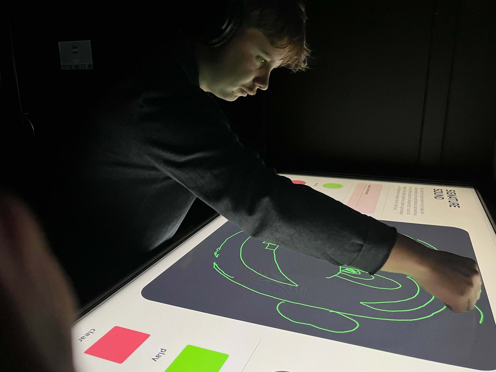
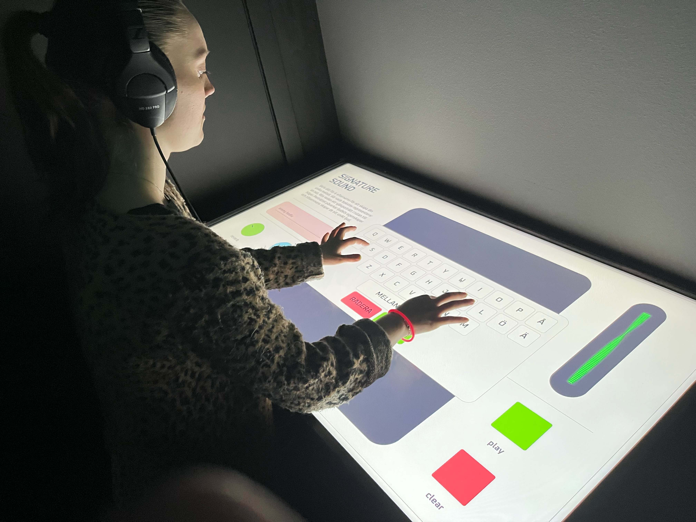
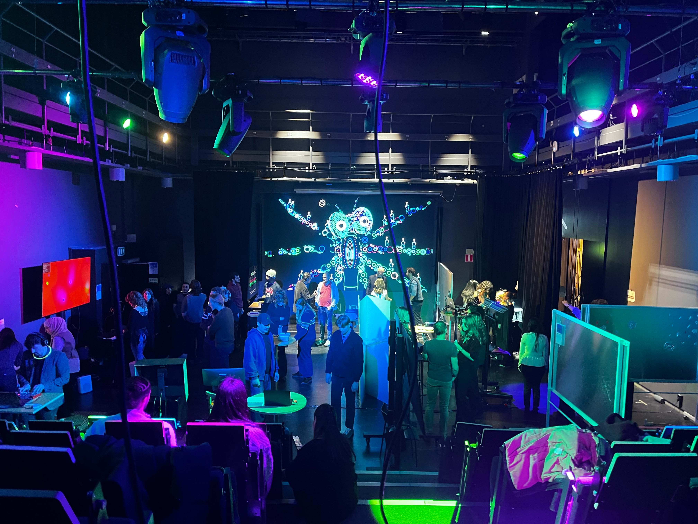
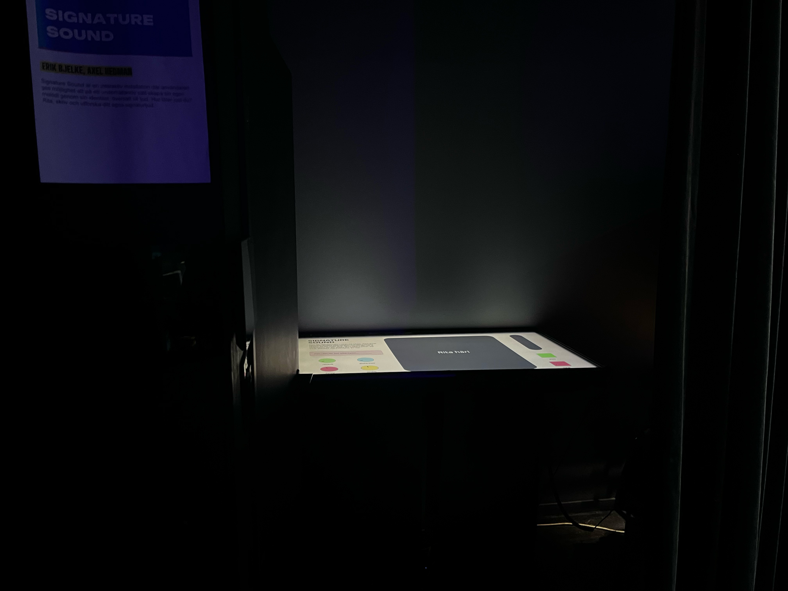
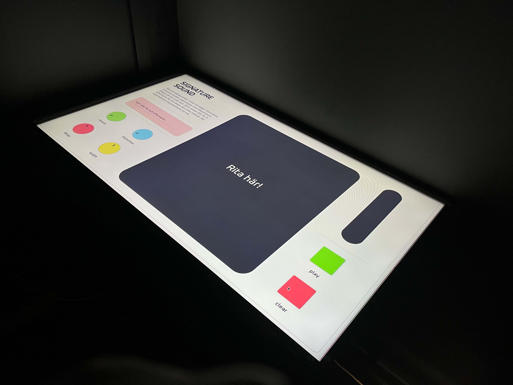

Axel Hedman
Studerar It, medier och design på Södertörns Högskola.
Om projektet
Signature Sound är en interaktiv installation där användaren ges möjlighet att på ett underhållande sätt skapa sin egen melodi genom sin identitet, översatt till ljud. Hur låter just du? Rita, skriv och utforska ditt egna signaturljud.




